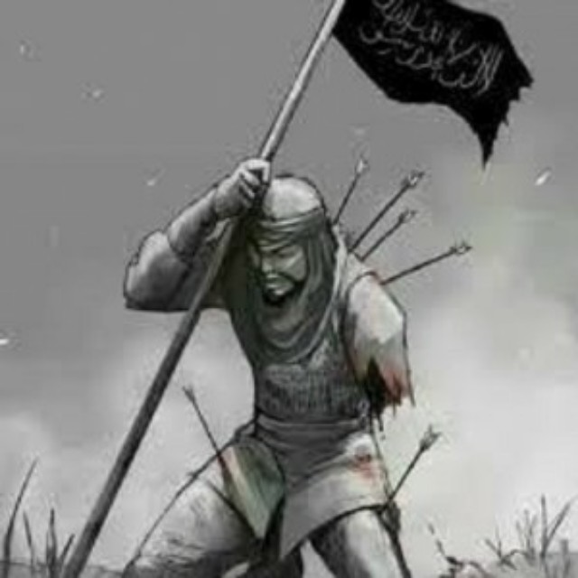
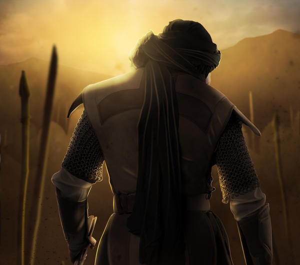
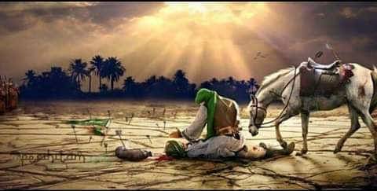

Mush'ab bin Umair, nama lengkapnya Mus'hab bin Umair bin Hasyim bin Abdi Manaf bin Abdudar, beliau lahir pada tahun 585 M. Ayah Mush'ab bernama Umair bin Hasyim bin Abdi Manaf bin Abdudar, dan ibu Mush'ab bernama Khunas binti Malik, Nasab ayah dan ibunya memiliki pengaruh besar karena kekayaan dan status sosialnya. Nasab dari ayahnya yaitu Bani Abdudar memiliki tugas penting di Mekkah yaitu menjamu tamu baitullah yang datang, pemelihara dan pemegang kunci kakbah, dan bertanggung jawab terhadap tugas militer dan administrasi. Mush'ab merupakan remaja Quraisy yang terkemuka, paling tampan, penuh dengan semangat muda, memiliki badan yang tegak, senyumnya manis, kulitnya lembut dan wangi sehingga mancuri perhatian kaum hawa di Mekkah. Sejarawan dan ahli riwayat menjelaskan masa mudanya dengan ungkapan "Seorang penduduk Mekkah yang mempunyai nama paling harum".
Sejak awal Mush'ab memang sudah dipersiapkan oleh orang tuanya untuk menjadi pemimpin Bani Abduddar di masa yang akan datang, maka dari itu Mush'ab selalu memanfaatkan waktu luangnya untuk belajar dan berlatih dengan melibatkan dirinya di berbagai kegiatan dan pertemuan penting yang dilakukan oleh pembesar Quraisy di Darun Nadwah. Darun Nadwah sendiri merupakan bangunan yang berfungsi sebagai tempat berkumpulnya para petinggi kabilah Quraisy untuk bermusyawarah dan menyelesaikan berbagai masalah masyarakat Quraisy. Dis inilah Mush'ab belajar cara berdialog dengan berbagai argumentasi, dan belajar taktik strategi diplomasi dan negosiasi. Mush'ab awalnya penasaran terhadap ajaran yang dibawa oleh nabi Muhammad SAW yang berakhir dengan beliau mendapatkan ketenangan saat mendengar Rasulullah membacakan ayat suci Al-Quran yang membuatnya mantap untuk memeluk Islam.
Setelah masuk Islam Mush'ab meninggalkan fasilitas kekayaan yang diberikan oleh orang tuanya, dan berganti menjadi kesederhanaan, bahkan dalam riwayat lain disebutkan setiap kali pakaian Mush'ab berlubang maka ditambal. Seperti Sa'ad bin Mu'adz yang seorang pemimpin Bani Aus yang awalnya murka dan mengambil tombak pendeknya menuju Mush'ab saat di Madinah untuk mengetahui ajaran apa yang dibawa oleh Rasulullah SAW dengan perantara Mush'ab, namun Mush'ab menghadapinya dengan tenang dan langsung menceritakan ajaran Islam.
Melihat Mush'ab mendakwah dengan gaya retorika yang tajam namun lemah lembut dan menyejukkan membuat Sa'ad bin Mu'adz merasakan penuh ketenangan dan rasa ingin tahu yang besar kepada Islam, dan akhirnya setelah menyimak dan memikirkan, maka masuklah Sa'ad bin Mu'adz ke agama Islam dengan mengucapkan syahadat di depan Mush'ab bin Umair, dan langsung saja Sa'ad bin Mu'adz mengajak para pengikutnya untuk masuk Islam, karena Sa'ad bin Mu'adz merupakan pemimpin yang sangat ditaati dan ditakuti oleh kaumnya, maka atas izin Allah semua pengikutnya juga ikut memeluk Islam. Setelah kejadian itu Mush'ab bin Umair mampu mengubah Madinah dari kota musyrik menjadi kota Islam.
Cerita kematian Mush'ab bin Umair ini disarikan dari riyadus solikhin yang diriwayatkan oleh Imam Bukhari. Mush'ab gugur secara syahid saat berjuang bersama Rasulullah SAW di perang Uhud. Perang Uhud adalah pertempuran yang pecah antara kaum muslimin dan kaum kafir Quraisy pada hari sabtu, tanggal 23 Maret 625 M (7 Syawal 3 H). Pertempuran ini terjadi kurang lebih setahun lebih seminggu setelah Pertempuran Badar.
Berikut ini kronologi kematian syahid Mush'ab bin Umair:
Pemegang Bendera Islam di Perang Uhud
Pada masa itu, saat perang Uhud yaitu peperangan antara umat Islam dan kaum kafir, Mush'ab bertugas sebagai pemegang bendera Islam, sebuah tugas yang membutuhkan keberanian dan keteguhan hati. Meskipun musuh menyerangnya berulang kali, Mush'ab tidak gentar dan tetap mempertahankan bendera Islam dengan keras.
Gugur dengan Gagah Berani
Setelah Mush'ab bin Umair susah payah bertahan dengan kuat dan gagah untuk mempertahankan bendera Islam, tetapi pada akhirnya dalam pertarungan sengit itu, seorang prajurit kafir Quraisy menikamnya dengan tombak, dan Mush'ab bin Umair pun gugur sebagai syuhada di medan perang Uhud. Kesetiaan dan keberanian Mush'ab bin Umair tidak hanya terlihat dalam pertempuran, tetapi juga dalam kehidupan sehari-harinya. Meskipun beberapa kali berpartisipasi dalam perang, ia tidak pernah mendapatkan harta rampasan perang seperti yang lainnya. Saat terbunuh di Perang Uhud, ia hanya meninggalkan selembar baju lurik yang tidak begitu lebar.
Jasad Mush'ab bin Umair ditemukan oleh Rasulullah SAW
Saat jasad Mush'ab bin Umair ditemukan, Rasulullah dengan penuh kasih sayang dan penuh hormat mengambil kain lurik itu untuk menutupi kepala Mush'ab. Namun, karena kain tersebut tidak cukup lebar, jika ditutupkan ke kepalanya, tampaklah kedua kakinya. Sebaliknya, jika kedua kakinya ditutup, maka tampaklah sebagian kepalanya